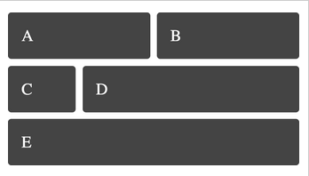
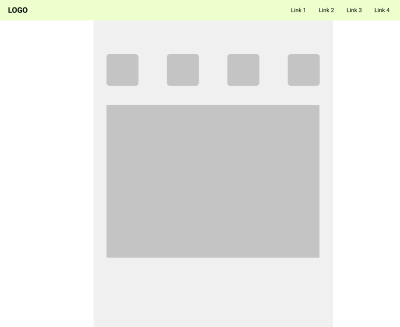

/*
Project 1:
Web Publishing
*/
We will explore the structure of the Web in depth and looks into the range of possibilites presented by its robust, flexible and mature information architecture and visual communication options.
Documentation: The deliverable for this project will be a live site that could be a foundation of your portfolio, a presentation of a project or a topic of your interest.
Week 1: Jan 20
In-class:
Structure of the modern Web from the beginning: TCP/IP, DNS, HTTP, other protocols. Basic Web publishing toolset. Text markup and information architecture with HTML. Version control, Git, GitHub. Web Publishing with GitHub pages.
Homework:
Create a Webpage that would create visual texture or illustration using only text formatted with HTML. Look at Carl Andre's poems or ASCII art for ideas. Publish in your Github repo.
Week 2: Jan 27
In-class:
Stylesheets, visual structures on the Web, layout strategies, responsive design.
Homework:
Create 3 HTML pages. Each page should contain a link menu to enable navigation among them, with the live links pointing to other pages. Each of the three pages should contain a unique layout using CSS grid technique. One of the pages should conform to this model:
Others can follow any layout you like. You can use an Ipsum Variant, a random Wikipedia page, or anything else for the content. Use both images and text to fill the cells in your grid.
Use any other additional CSS you like; explore colors and typography options; experiment with transformations, backgrounds, even animations if you like. Make sure you're having fun with it all!
Week 3: Feb 3
In-class:
CSS: responsive design
Homework:
Create a page that has the same content, but completely changes the way it's presented depending on the devive you use to view it. Colors, layout, typography, composition - all needs to exist in at least three versions, but on the same page.
Week 4: Feb 10
In-class:
JavaScript: events, DOM element properties, basic interactivity.
Homework:
Create an image display gallery: 4 small thumbnail image in a row and a large section for an image display below. Clicking on any of the thumbnail images should display that image in a large section.
Optional: add timed event to make the images switch automatically at an interval. See this page for details. Try to add pause/play buttons to pause and re-start the automatic image switching.
/*
Project 2:
Digital Dream Space
*/
With this project we'll begin the exploration of virtual environments. We'll look at how digital spaces can emulate or build upon the physical realm, and we'll take on the spaces that are not possible or not necessary in the material world, but present us with some exciting creative possibilities in the digital medium.
The project is not centered around a specific tool, but is rather meant to be an overview of (some) conventions, constraints, and opportunities in the digital 3D space.
The outcome of this project will be an environment you can call your digital home on the Web. Consider not only the elements that you would like to include but also the kinds of activities that your environment would be suitable for.
Documentation: please create a Web page with the link to your Web-based environment and a video showing your Zoom space. Write about the process of creation of those space and consider the following questions:
- What is the story behind this space?
- What was the strategy in selecting and placing the components of your your environment? How and why did you make those selections?
- What kinds of activities do you hope will take place in your space? How are you preparing for them? What are doing to promote and encourage those activities?
- How would you build up on the final result? Would you add more stuff or refine the existing components?
Week 5: Feb 17
In-class:
Introduction to 3D environment with Mozilla Hub and Spoke. Building and finding components: Blender, Turbosquid, Sketchfab.
Deeper dive into Web-based 3D: A-Frame and ThreeJS.
Homework:
Create a Web-based 3D environment: Start by sketching or moodboarding. Collect or sculpt your assets. Import them into the platform of your choice and start arranging the space.
Week 6: Feb 24
In-class:
Troubleshooting workshop. Show and tell.
Homework:
Finish, polish, publish.
Week 7: March 3 — NO CLASS
/*
Project 3:
The Mediated Extension of Self
*/
From Marx to McLuhan and beyond the idea that the technology - in the broadest sense - is what augments the human and makes us stand out among the rest of the animal kingdom has permeated the discussion about the relationships between ourselves and our media. Tools augment our physical ability, information storage and disseminaation techniques extend the capacity of our minds. But in all those conversations the focus has been disctincly outward, to the world outside of our selves and our bodies. I will ask you to see how the technolgy can be pointed inward.
For this project we are going to explore how digital technolgy extends and augments our senses, our bodies and our visions of ourselves. We'll start by creating devices that would allow us to collect data from our immediate surroundings; that would serve as extensions of our bodies and sensory organs. We will organize and distill this data to a meaningful set and explore ways of presenting it that could uncover possible underlying patterns.
Documentation: The artefacts created during this project will include both physical devices and information presentations. The focus of documentation will be the details of the technical process. How the device(s) are constructed, how the data is collected, how the decisions about organization and presentation are made. Think about it as a meta-diary: information about the process of collecting and displaying information.
Week 8: March 10
In-class:
Body sensors, building a data-collection device.
Homework:
Collect data regularly and as often as possible. Store it in the raw format in the cloud (AdafruitIO).
Week 9: March 17
In-class:
Selecting and organizing data into useful information. Presentation strategies.
Homework:
Continue collecting data and work on building a presentation.
Week 10: March 24
In-class:
Troubleshooting workshop. Show and tell.
Homework:
Finish, polish, publish.
/*
Project 4:
Building for play
*/
Games have been human companions for millenia, and the videos games have taken a place close to the center of the modern media landscape. There are many things to study and learn about this vast subject, and in the spirit of the class we will approach the topic with from the making and experimentation perspective. Try first and rationalize later!
In this project we will explore the technical components of a video-based game: the physics and mechanics expressed in code, and the physical-to-digital connection from the game controller to the screen. You will have to consider goals and motivations for the players, the scoring system, the narrative, the art and atmosphere, and the physical aspects of play embodied in the ergonomic concerns. While complex, the result need not be complcated - but fun is mandatory! The outcome of the project will be an original video game and a custom controller for it.
Documentation: please create a live page with the description of the game concept, goals, mechanics and the background story. Post a video showing several people playing your game, and another showing the key moements in the play through. Collect opinions from your play-testers and post them on that page. You can reference any page on Steam store for inspiration.
Week 11: March 31
In-class:
Game mechanics in code. Goals, rewards, obstacles, penalties. Game physics.
Homework:
Your proposal for your game: diagrams, flowcharts.
Week 12: April 7
In-class:
Controller: sensors, layout, ergonomics, gameplay.
Homework:
Build your controller. Document the playtesting process.
Week 13: April 14
In-class:
Troubleshooting workshop. Show and tell.
Homework:
Finish, polish, publish.
Week 14: Dec. 13 - 17 — NO CLASS
Resources
Project 1
Project 2
Hardware
Tutorials and documentation
Git and GitHub
WorldWideWeb: HTML, CSS, JavaScript
Students
- Arianna D. Borgeson: Documentation, openProcessing
- Alison Chang: Documentation, openProcessing
- Benjamin Glasser: Documentation, openProcessing
- Leslie A. Ho: Documentation, openProcessing
- Giah Kim: Documentation, openProcessing
- Enzo Li: Documentation, openProcessing
- Rongda Tao: Documentation, openProcessing
- Xiaomeng Wang: Documentation, openProcessing
- Yanyi Wang: Documentation, openProcessing
- Ju Xie: Documentation, openProcessing
- Flora Zhou: Documentation, openProcessing